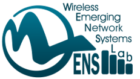
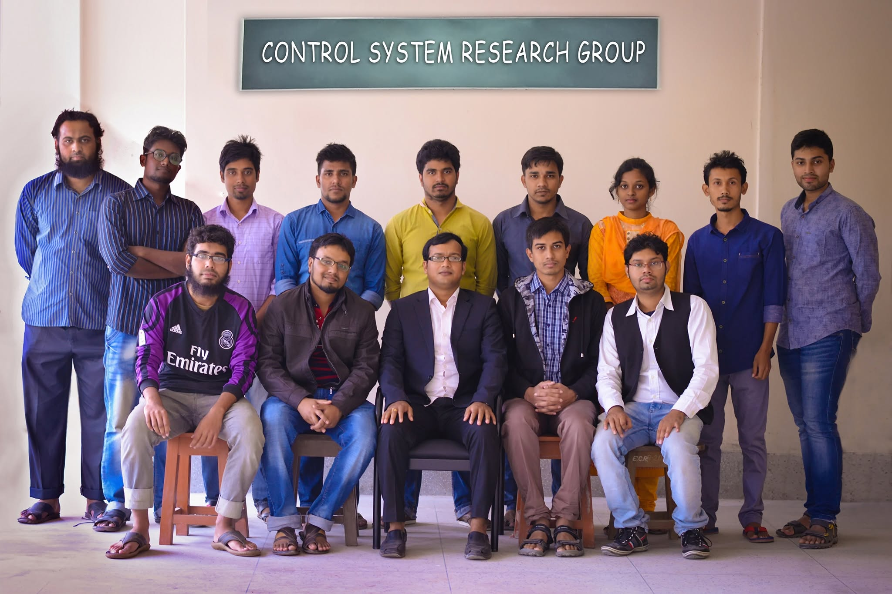
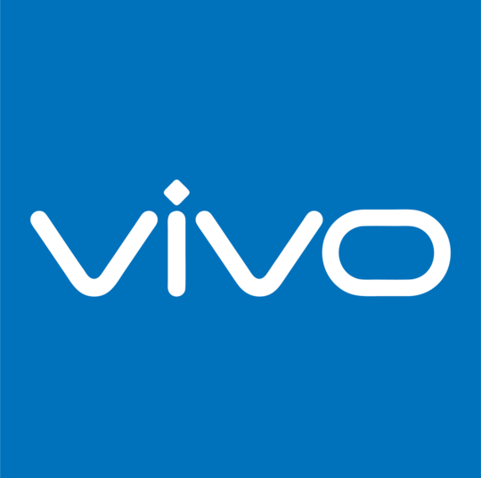
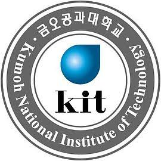
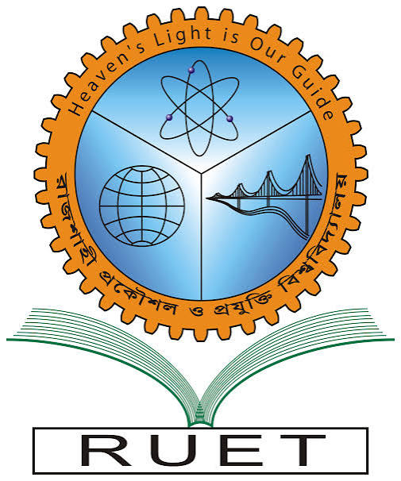

[ResearchGate Profile] • [LinkedIn Profile]
Specializing in Robotics, Autonomous Systems, UAV Control & Navigation, Cyber-Physical Systems, Artificial Intelligence, and Multi-Agent Swarm Architectures.

Research Interests
UAV Control & Autonomous Navigation
Risk-aware motion planning, human-safe aerial trajectories, dynamic obstacle perception, and velocity-obstacle guided predictive control.
Multi-Agent & Swarm Exploration
Decentralized multi-UAV exploration, continuous vehicle telemetry synchronization, and multi-GCS seamless handover systems.
Perception & Cyber-Physical Systems
LiDAR/RGB-D sensor fusion, multi-sensor orchard mapping, industrial AGVs, and robust control strategies.
Master's Research & Projects (MS Projects)

Aeroterra (Multi UAV Exploration)
Developing a multi-UAV system for exploration with robust coordination. Responsible for LiDAR and camera-based perception, localization, and collaborative exploration planning.
UAV Obstacle Avoidance
Developing a multi-UAV framework with robust coordination. Focused on RGB-D camera-based perception and real-time static/dynamic obstacle detection.

Multi-GCS UAV Handover
Designed and implemented a Multi-GCS Seamless Handover System for long-range UAVs. Developed ROS 2 network architecture to manage control authority and maintain continuous telemetry synchronization across stations.
Bachelor's Projects (BS Projects)

Automated Color-Based Sorting System
Developed an automated sorting system to identify and separate moving objects based on color. Implemented sensor-based color detection, conveyor control, and 2-DOF robotic arm kinematics for accurate object sorting.

Autonomous Mars Rover Prototype
Designed and fabricated an all-terrain rover system for navigation and soil sampling. Achieved 6th place overall at the Indian Rover Challenge organized by Vellore Institute of Technology (VIT).

High-Speed Autonomous Line Following Robot
Engineered a high-speed line tracer robot with custom IR sensor array calibration, closed-loop PID control algorithm, and optimized chassis design. Awarded Runner-up at Intra RUET Robo-App Challenge.

Wireless Sensor-Actuator Network Node
Implemented a wireless sensor network framework for remote actuator control through real-time database interaction and embedded communication protocols.
Industry Projects

AGV-Driven Fixture Flow Automation
Automated fixture transfer from SMT production line ends to the loading station using an AGV-based transport system. Designed navigation tracks, configured wireless call/send control, and supported obstacle avoidance.

SMT Line Machine Calibration & Profiling
Debugged, programmed, and optimized high-speed SMT lines involving Solder Paste Inspection (SPI), Pick & Place, 3D AOI, and reflow thermal profiling to minimize scrap and reduce defects.

NPI Quality & Reliability Validation Framework
Coordinated New Product Introduction (NPI) trial production, reliability stress testing, and quality control flows. Analyzed failure modes using 8D CAPA, FMEA, and automated optical inspection data.
Publications
-
 RAMP: Risk-Aware Motion Planning for Human-Safe UAV Navigation[Accepted]The Journal of Korean Institute of Communications and Information Sciences (SCOPUS)Md Mukidur Rahman, Soo Young Shin
RAMP: Risk-Aware Motion Planning for Human-Safe UAV Navigation[Accepted]The Journal of Korean Institute of Communications and Information Sciences (SCOPUS)Md Mukidur Rahman, Soo Young Shin -
 Instantaneous Perception-Enhanced Human Trajectory Prediction for UAV Navigation in Dynamic Environments[Submitted]Autonomous Robots (SCIE)Md Mukidur Rahman, Soo Young Shin
Instantaneous Perception-Enhanced Human Trajectory Prediction for UAV Navigation in Dynamic Environments[Submitted]Autonomous Robots (SCIE)Md Mukidur Rahman, Soo Young Shin -
 Robust extended H∞ control strategy using linear matrix inequality approach for islanded microgrid2020IEEE Access, vol. 8, pp. 135883-135896 (SCIE)Maniza Armin, Mizanur Rahman, Md Mukidur Rahman, Subrata K. Sarker, Sajal K. Das, Md Rabiul Islam, Abbas Z. Kouzani, MA Parvez Mahmud
Robust extended H∞ control strategy using linear matrix inequality approach for islanded microgrid2020IEEE Access, vol. 8, pp. 135883-135896 (SCIE)Maniza Armin, Mizanur Rahman, Md Mukidur Rahman, Subrata K. Sarker, Sajal K. Das, Md Rabiul Islam, Abbas Z. Kouzani, MA Parvez Mahmud
-
Passive Avoidance for Human-Aware UAV Navigation via VO-Guided MPC [More]2026Proc. of the Korean Institute of Communication Sciences and Information Sciences ConferenceMd Mukidur Rahman, Soo Young Shin[Telemetry & Session Presentation Photos]


-
Instantaneous Dynamic-Obstacle Perception for Autonomous UAV Navigation [More]2025Proc. of the Korean Institute of Communication Sciences and Information Sciences ConferenceMd Mukidur Rahman, Soo Young Shin[Presentation & Poster Session]


-
Dynamic Obstacle-Aware Navigation Framework for Complete Coverage in Aerial Exploration [More]2025Proc. of the Korean Institute of Communication Sciences and Information Sciences Conference, pp. 1115-1116Md Mukidur Rahman, Soo Young Shin[Conference Session Photos]

-
A Multi-Sensor Fusion Orchard Mapping Framework for UAV-Based Fruit Harvesting [More]2025Proc. of the Korean Institute of Communication Sciences and Information Sciences Conference, pp. 636-637Md Mukidur Rahman, Soo Young Shin[Session Presentation & Discussion]

-
A WSN (wireless sensor network) approach for controlling the actuator wirelessly through database interaction [More]20237th International Conference on I-SMAC (IoT in Social, Mobile, Analytics and Cloud), pp. 314-319Md Asif Bin Karim, Md Mukidur Rahman, Saquib Shahriar, Md Manirul Islam[I-SMAC Conference Presentation]

-
Fractional order robust PID controller design for voltage control of islanded microgrid [More]20184th International Conference on Electrical Engineering and Information & Communication Technology (iCEEiCT), pp. 234-239Stanley H. Sikder, Md Mukidur Rahman, Subrata K. Sarkar, Sajal K. Das[iCEEiCT Session Photos]

-
Implementation of Nelder-Mead optimization in designing fractional order PID controller for controlling voltage of islanded microgrid [More]2018International Conference on Advancement in Electrical and Electronic Engineering (ICAEEE), pp. 1-4Stanley H. Sikder, Md Mukidur Rahman, Subrata K. Sarkar, Sajal K. Das, Md Arifur Rahman, Masuma Akter[ICAEEE Presentation Photos]

Research Experience
-

Research Assistant (M.Sc. Student)Sep. 2024 – Aug. 2026Wireless Emerging Network System (WENS) Laboratory, Kumoh National Institute of TechnologySupervisor: Professor Dr. Soo Young Shin
Research focus on autonomous UAV control, multi-GCS telemetry synchronization, ROS 2 integration, and perception-enhanced dynamic obstacle avoidance. -

Research Assistant (B.Sc. Student)Jan. 2017 – Mar. 2019Control System Research Group, Rajshahi University of Engineering & TechnologySupervisor: Dr. Sajal Kumar Das
Focused on fractional-order robust PID controller design, Nelder-Mead optimization, and voltage control in islanded microgrids.
Professional Experience
-
Head, Process DevelopmentFeb. 2024 – Aug. 2024Walton Digi-Tech Industries Limited
- Design and optimize production processes, optimize process cost, and enhance production efficiency with full quality standards and safety regulations.
- Analyze and troubleshoot process breakdowns, identify root causes, and execute corrective actions to minimize downtime and prevent recurrence.
-
Manufacturing (SMT) Process EngineerAug. 2021 – Feb. 2024Walton Digi-Tech Industries Limited
- Debug and optimize programs for SMT machinery including SPI, Pick & Place, AOI, X-ray, and reflow thermal profilers.
- Optimize SMT manufacturing processes, reducing defects and waste utilizing Lean methodologies.
-

Sr. Quality Assurance EngineerJan. 2021 – Aug. 2021Vivo Mobile Bangladesh- Assess testability of new products, conduct trial production, and execute reliability testing as NPI Coordinator.
- Execute process monitoring and inspection to identify nonconformity, evaluate quality risks, and enforce control processes.
-
Quality Control EngineerMar. 2019 – Jan. 2021SAMSUNG – Fair Electronics Limited
- Developed Quality Assurance plans defining test methods, standards, and SOPs for smartphone manufacturing.
- Analyzed faults using Pareto charts, Cause & Effect Diagrams, FMEA, and 5Whys. Executed 8D methodology for CAPA.
Academic Records
-

Master in Engineering, IT Convergence EngineeringSep. 2024 – Aug. 2026Kumoh National Institute of Technology (KIT), Gumi, South KoreaCGPA: 4.50 out of 4.50 -

Bachelor of Science in Engineering, Mechatronics EngineeringMar. 2014 – Feb. 2019Rajshahi University of Engineering & Technology (RUET), Rajshahi, BangladeshCGPA: 3.07 out of 4.00
Technical Skills & Linguistics
Programming Languages
C, C++, Python, MATLAB
Robotics Platforms
ROS, ROS 2, Gazebo, PX4 Autopilot
Embedded & Hardware
Arduino, AVR Microcontrollers, AGV Navigation
Development Tools
Git, LaTeX, Docker, Linux
Linguistic Proficiency
English: IELTS Overall Band Score: 7.0 (Listening: 8.0, Reading: 6.5, Writing: 6.5, Speaking: 7.0)
Awards & Honors
-
• Global Korea Scholarship (GKS) by Kumoh National Institute of Technology
-
• Organizing Secretary, Robotic Society of RUET (RSR)
-
• 6th Place at Indian Rover Challenge organized by Vellore Institute of Technology
-
• Runner-up Award in Line Following Robot Category at Intra RUET Robo-App Challenge (IEEE RUET Student Branch)
-
• Top-12 Award in Idea Contest at ETCell Weekend organized by IEEE RUET Student Branch
-
• Undergraduate Scholarship by the University Grants Commission of Bangladesh
-
• Secondary Scholarship by Ministry of Education, Government of Bangladesh